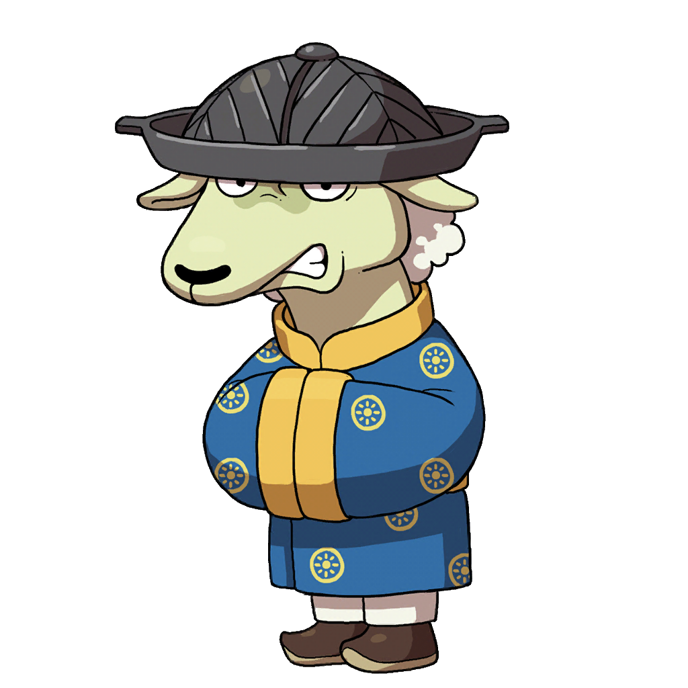
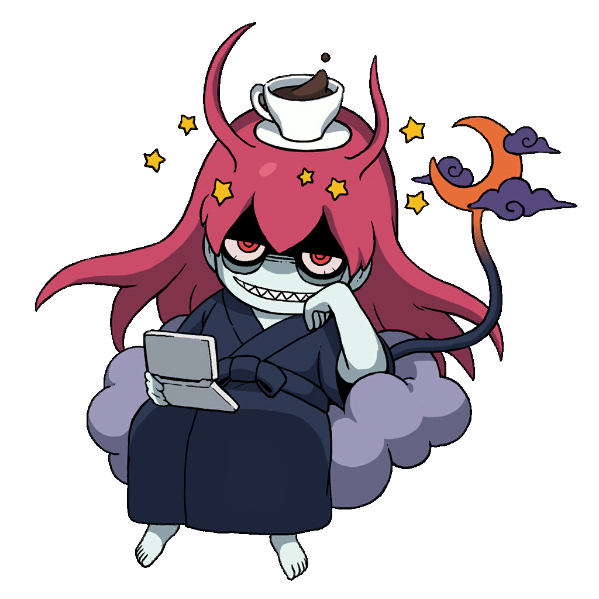

What's new?
Yo-Gon Academy is now accessible via the internet!
After configuring the files in Github, I was able to create Web version of this website!
Website can be accessed using this address: https://hilwinnorm.github.io/YokaiWatchWebsite_Comp/
YoGon Academy will still be accessible locally but in the near future after certain updates,
you will need internet to access some of upcoming features.
Below you can see all content that was recently added. If you have any questions, you can contact me through my discord: @hilwin
Updates:
1.0.0:
• Added Tier Sheet, showing where each yokai is in the tiers.
• Added moving Wallpapers! (Can be changed in top right corner; See below to see all new Wallpapers)
• New design for Strategy Medallium
• New design for Team Builder, added option to edit Yokai's stats, added Equipment (and Soul Gem) list
• Added search option for some pages
• Added Equipment List page
• Added more fonts (See below for more information)
1.1.0:
• Added Yo-Kai Data, that contains all of Yokai attacks and skills!
• Added two more Wallpapers: "Oh My Swirls! Pattern", "Hearts and Fluff"
• Divided Background into two separate parts
• Added new icons to various pages!
• Fixed various bugs related to IV, GYM and Attitude inputs
• Fixed bug related to techniques not being found in damage calculator
• Added missing Yokai to Yokai Database

New Fonts:
• HOT-Bukotsu Std U
• FOT-UDMarugo_LargePr6N-DB
• FOT-Seurat Pro B
• about_friend_v5
New Wallpapers:
•
• 
•
•
•
•
•
•
•
•